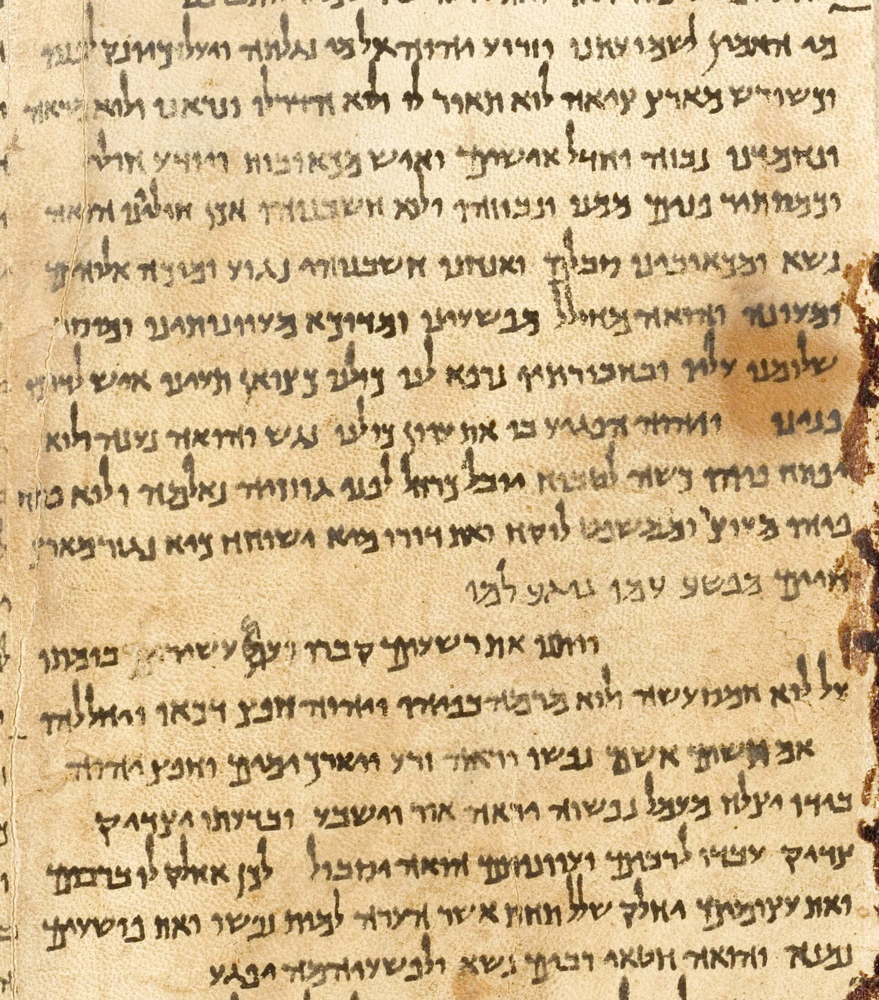

Isaiah 53 — The Mister Translation

Not a painting of the chapter — the chapter, in a copy made around 125 BC and read by no one for nineteen centuries until 1947. Three things are worth looking at. There are no vowel points: the marks that fix Hebrew pronunciation were added by Masoretic scribes roughly a thousand years after this was written, so every reading decision this translation discusses was, here, still open. There is a paragraph break in the middle of the column, and a small letter inserted above the line — an ancient correction, made by a scribe who noticed a slip and fixed it rather than starting the sheet again. And this column is the physical witness behind two of the notes on this page: it carries lamo at verse 8, and at verse 11 it reads ‘he will see LIGHT’ — the word the Masoretic text does not have and the Septuagint independently does. ⚠ The brown staining at the right edge is damage, not ink.
{kind=link}
Translator’s Notes
1–3 — ⚠ Who is the servant? The question this chapter cannot settle
Before a word of it is translated, the chapter has to be introduced honestly, because it is the most argued-over passage in the Hebrew Bible and the argument is textual, not merely theological.
The corporate reading takes the servant as Israel. Its strongest card is not interpretation but a sentence: Isaiah has already said, four chapters earlier, “you are my servant, Israel” (49:3), and the surrounding Servant Songs name Israel as the servant repeatedly (41:8–9, 44:1–2, 44:21, 45:4, 48:20). On that reading the “we” of verses 1–6 is the nations, astonished at what Israel suffered among them. This is the standard Jewish reading, held by Rashi and others, and it is a reading of the book, not a dodge.
The individual reading answers that this servant is distinguished from the people — “from my people’s transgression” (v8) sets him over against them — that he is innocent (v9) where Israel elsewhere in Isaiah is not, and that 49:5–6 gives the servant a mission to Israel, which is hard if he simply is Israel. This is the standard Christian reading, and Acts 8:32–35 shows it was already in use in the first century.
⚠ This library sets the two cases beside each other and takes no vote. Both are serious readings of a genuinely ambiguous text, the translation below is deliberately neutral on the question, and the notes flag every place where the Hebrew leans one way or the other — including the two that lean against the reading most readers of this site will arrive with.
Chadal ishim (v3) is odd and strong: not “rejected” but ceasing of men — one who has stopped counting among people, who has fallen out of the human ledger. KJV and ASV both smooth it to “rejected of men.” And the two versions disagree about who hides the face in the same verse: KJV has “we hid as it were our faces from him,” while ASV has “as one from whom men hide their face” — the Hebrew supports either, and the difference is whether the shame is ours or his.
4–6 — The pronouns are doing the work
The Hebrew of verse 4 fronts the possessives for emphasis in a way English can only approximate: chalayenu, makhoveinu — our sicknesses, our pains. Then va-anachnu, “and we ourselves”, an independent pronoun Hebrew does not need and only adds to press. The whole passage is built on a contrast of persons: our against he, repeated until it cannot be missed.
Verse 5 twice uses min, “from” — pierced from our transgressions, crushed from our iniquities. Every version on the shelf renders it for, which is defensible (min can be causal) but quietly converts a preposition of source into one of purpose, and purpose is precisely what is disputed. This translation keeps from. And chaburah is not a decorative “stripe” but a welt — the raised bruise a blow leaves.
Verse 6’s verb is hiphgia, the causative of paga, to meet or encounter — Jehovah made our iniquity meet him, ran it into him. KJV and ASV both say “hath laid on him,” which is smoother and loses the collision. Hold on to the root: it comes back in the last line of the chapter, and it is the hinge of the whole poem.
7 — A ewe, not a sheep
The second animal is rachel, specifically a ewe — the same word as the name Rachel. English versions say “sheep,” which is not wrong and is not the word. Note also what the verse does not say: it never calls him a lamb of sacrifice. He is a lamb led to slaughter and a ewe under the shears, and shearing is not killing — the second image is about silence under handling, not death.
8–9 — ⚠ Two plurals the translations quietly singularise
These are the two places where the Hebrew leans toward the corporate reading, and almost every English Bible levels them.
Verse 8: lamo, “to them.” The line reads “from my people’s transgression, a stroke lamo” — and lamo is normally a plural pronoun, “to them.” KJV renders “was he stricken,” ASV “to whom the stroke was due,” and NWT “he received the stroke” — all singular, all supplying a pronoun the Hebrew does not have there. The form can be singular in poetry, which is why this is a crux and not an error; but a reader deserves to know that the plainest reading of the word is plural.
Verse 9: be-motav, “in his DEATHS.” The noun is plural. And here the honours go to 1611: KJV prints “in his death” but carries a marginal note — “Heb. deaths” — telling the reader exactly what the text says. ASV, NWT and RV all print the singular with no note at all. The margin of a four-hundred-year-old Bible is more candid here than three modern ones.
The rest of verse 8 is simply obscure. Me-otser u-mi-mishpat is “from restraint and from judgement,” which KJV reads as a prison release (“taken from prison and from judgment”) and ASV as an oppression (“by oppression and judgment he was taken away”) — opposite pictures from the same two nouns. And “as for his generation, who yesochéach?” uses a verb meaning to muse, complain, or talk over; nobody knows what it means here. NWT is frankest about the difficulty, bracketing an addition: “who will concern himself even with [the details of] his generation?”
10 — The hardest sentence in the chapter
Va-Yhwh chafetz dakk’o — “and Jehovah was pleased to crush him.” Chafetz is delight, desire, good pleasure; dakka is to pulverise. The versions do not flinch much, and they should not: KJV “it pleased the LORD to bruise him,” ASV “it pleased Jehovah to bruise him,” NWT most bluntly of all — “Jehovah himself took delight in crushing him.” RV softens slightly to «Jehová quiso quebrantarlo», ‘wished’. The sentence is left standing here without cushioning, because cushioning it is a theological decision and this page is not the place to make one for you.
The same root returns at the end of the verse in chefetz Yhwh, “the pleasure of Jehovah” — the word that crushed him is the word that prospers in his hand. That is deliberate, and it is why the translation above keeps pleased and pleasure rather than varying them.
11 — ⚠ A word the Dead Sea Scrolls have and the Masoretic text does not
The Masoretic text reads yireh yisba, “he will see, he will be satisfied” — see what? The object is missing, and the line is awkward in Hebrew.
The Great Isaiah Scroll from Qumran (1QIsaᵃ), copied about a thousand years before our oldest Masoretic manuscripts, supplies it: yireh OR — “he will see LIGHT, and be satisfied.” So does a second Qumran manuscript, and so does the Septuagint, independently, in Greek, centuries earlier. Three witnesses from different families agree on a word the Masoretic tradition lacks — which is about as strong as a textual case gets.
The shelf here is a good demonstration of how translation traditions move. KJV (1611) and ASV (1901) both predate the discovery of the scrolls in 1947 and print the Masoretic reading: “He shall see of the travail of his soul, and shall be satisfied.” RV 1909 the same. NWT keeps “he will see” in the text but marks the verse with a footnote, and modern committee Bibles (NIV, ESV, NRSV) now print light in the line itself. This translation follows the Masoretic text above and tells you the rest here.
⚠ It matters more than a single noun should, because “he will see light” after being cut off from the land of the living reads to many as survival past death, and that is exactly the sort of weight a contested word should not be made to carry silently.
12 — The root comes back
The chapter’s last verb is yaphgia — the same paga as verse 6, in the same causative form. In verse 6 Jehovah made our iniquity meet him; in verse 12 he makes something meet on behalf of the transgressors, which is what “intercede” means and why the word is used for prayer elsewhere. One verb, at both ends, running in opposite directions: everything came in at verse 6, and something goes back out at verse 12. Every version on the shelf translates the two occurrences with unrelated English words — “laid on” and “made intercession” — so the frame is invisible in English. It is the single best argument that these twelve verses are one composed poem and not a collection.
Note finally what the verse does not do: it never says the servant is dead at the end. He pours out his life to death, is numbered with transgressors, and then receives a portion and divides spoil. What that sequence means is precisely the argument the chapter has been having since verse 1.
Patterns worth carrying forward.
⚠ The one thing to carry out of this chapter. It is not settled, and this page does not settle it. Whether the servant is Israel or an individual is a live reading of a genuinely ambiguous text, with real evidence on both sides — Isaiah 49:3 calls the servant Israel by name; Isaiah 53:8 sets him against “my people.” Both cases are set out in full in the first note, the translation is deliberately neutral, and the notes flag the places the Hebrew leans either way, including two that lean against the reading most visitors will arrive with.
⚠ The manuscript find. At verse 11 the Masoretic text reads “he will see, he will be satisfied” with no object. The Great Isaiah Scroll from Qumran — a thousand years older than our oldest Masoretic manuscripts — reads “he will see light,” and so does the Septuagint, independently, centuries earlier. The text above follows the Masoretic reading and prints the evidence rather than burying it.
Two plurals the shelf singularises. Lamo at verse 8 is normally “to them”, and be-motav at verse 9 is “his deaths.” Both are kept here. Credit where it is due: the KJV of 1611 flagged the second in its own margin (“Heb. deaths”), and the ASV, NWT and RV print the singular with no note at all.
Renderings chosen. “Ceasing of men” for chadal ishim, which is stranger than “rejected.” From rather than for at verse 5, keeping min a preposition of source rather than of purpose. “Welt” for chaburah. A ewe at verse 7, because rachel is the ewe and the name. And pleased / pleasure kept identical at both ends of verse 10, because the Hebrew uses one root.
The frame. Paga, to meet, opens and closes the poem: Jehovah makes our iniquity meet him at verse 6, and he makes intercession — the same verb — at verse 12. No version on the shelf lets an English reader see it. It is the best evidence that these twelve verses are one composition.
⚠ A note on order: Isaiah on these pages is a set of landmarks — this chapter, the opening indictment of chapter 1, and the great comfort of chapter 40. The sequential thread is unchanged: next in sequence is Isaiah 2.